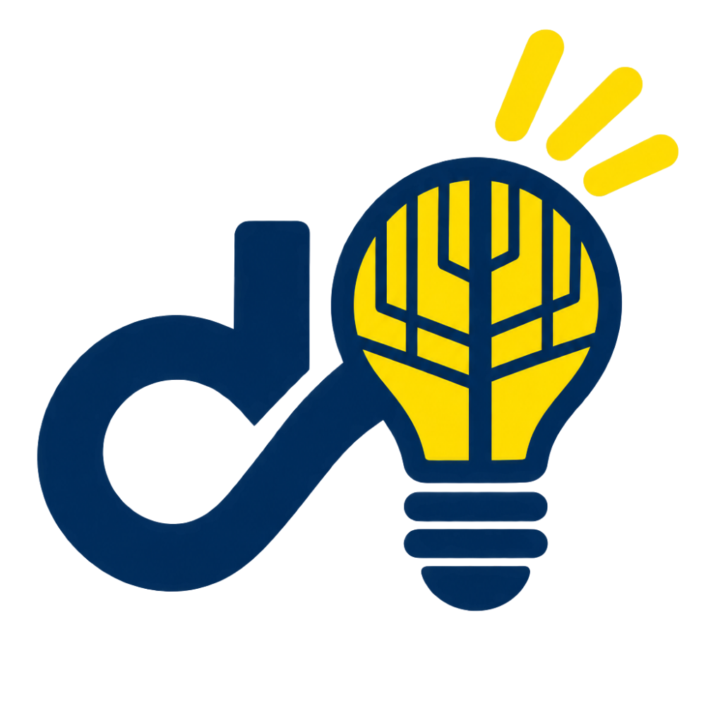

Imagotipo
El imagotipo representa la versión completa de la identidad de Diseño Digital. Integra el símbolo gráfico y el nombre del programa, separados por una línea amarilla que aporta equilibrio y orden a la composición. Su diseño busca transmitir una identidad propia, donde las ideas se encienden, evolucionan y se conectan a través de la creatividad y la innovación.